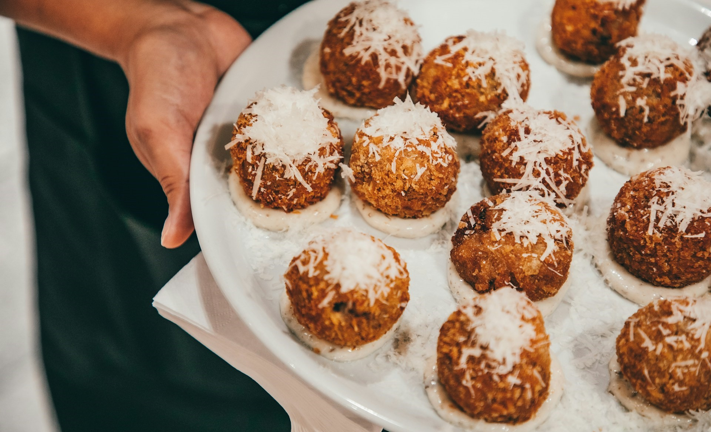

Risotto Arancini
Ingredients for the Arancini:
- 400g Arborio rice
- 1L of chicken or vegetable stock
- 1 small onion, diced
- 2 garlic cloves, minced
- 120ml dry white wine
- 50g grated Parmesan cheese
- 30g unsalted butter
- Salt and Pepper to taste
- Olive oil for sautéing
For the Filling:
- 125g mozzarella cheese, cut into small cubes
- 100g cooked and crumbled Italian sausage or diced ham (optional)
- 40g peas
For the Coating:
- 125g all purpose flour
- 2 Large eggs, beaten
- 200g panko breadcrumbs
- Vegetable oil for frying
Instructions:
- 1. Prepare the Risotto:
- In a large pan, heat a couple of tablespoons of olive oil over medium heat. Add the chopped onion and cook until soft and translucent, about 5 minutes.
- Add the minced garlic and cook for another minute.
- Stir in the Arborio rice and cook for 2-3 minutes until the rice is lightly toasted.
- Pour in the white wine (if using) and cook until its mostly absorbed.
- Begin adding the warmed broth, one ladleful at a time, stirring constantly. Allow the rice to absorb the broth before adding more. Continue this process until the rice is creamy and tender, but still slightly al dente, about 18-20 minutes.
- Stir in the butter and Parmesan cheese, then season with salt and pepper to taste.
- Let the risotto cool completely. This can be done a day ahead and stored in the refrigerator.
- 2. Assemble the Arancini:
- Once the risotto is cool, take a small handful of it and flatten it into your palm.
- Place a cube of mozzarella (and a bit of sausage, ham, or peas if using) in the center.
- Carefully fold the rice around the filling, shaping it into a ball. Repeat with the remaining risotto.
- 3. Coat the Arancini:
- Set up a breading station with three shallow bowls: one with flour, one with beaten eggs, and one with breadcrumbs.
- Roll each rice ball in the flour, shaking off any excess.
- Dip the floured ball into the beaten eggs, making sure its fully coated.
- Roll it in the breadcrumbs, pressing gently to adhere. Repeat for all the arancini.
- 4. Fry the Arancini:
- Heat vegetable oil in a deep fryer or large heavy-bottomed pot to 175°C (350°F).
- Fry the arancini in batches, making sure not to overcrowd the pot. Cook until golden brown and crisp, about 3-4 minutes per batch.
- Remove the arancini with a slotted spoon and drain on paper towels.
- 5. Serve:
- Serve the arancini hot, with marinara sauce on the side for dipping. They can also be enjoyed on their own.